Create Volume Mesh of a Muffler
This demo explains how to create a volume mesh of a muffler geometry.
Contents
Geometrical parameters
The muffler consists of three cylindrical parts: , where is a cylinder with radius 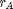, length 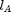, and 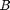 is a cylinder with radius 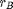 and length 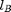.
rA = 1; % radius of component A lA = 1; % length of component A rB = .39; % radius of component B lB = .7; % length of component B Le = .05; % length of a finite element
Create the muffler components
The mesh components and are created separately and the muffler is assembled later from the components. Both components are created by extrusion from disc surface meshes. The two discs are meshed in the following.
The larger disc geometry is constructed by meshing a slab in the domain 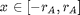, ![$y \in [-r_A, r_A]$](mufflerdemo_eq43780.png) and transforming the slab node coordinates 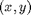 to coordinates of a disc 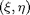 by the transform 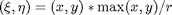, where 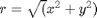.
and transforming the slab node coordinates 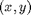 to coordinates of a disc 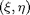 by the transform 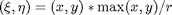, where 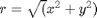.
The slab is meshed with a non-uniform division in order to ensure that the disc will contain nodes at 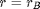 after the transformation.
x1 = linspace(0, rB, ceil(rB/Le)); % meshing the radius between 0 and r x2 = linspace(rB, rA, ceil((rA-rB)/Le)); % meshing the radius between r and R x = unique([-x2, -x1, x1, x2]); % meshing the slab Disc = create_slab(x); figure; plot_mesh(Disc);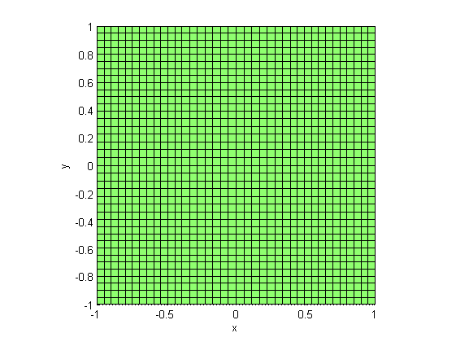
The transformation is performed as follows:
nodes = Disc.Nodes(:,2:4); % extract the nodes r = sqrt(dot(nodes, nodes, 2)); % radius of the slab coordinates Disc.Nodes(:,2:4) = nodes .* repmat(max(abs(nodes),[],2)./r, 1, 3); Disc.Nodes(r == 0,2:4) = 0; figure; plot_mesh(Disc);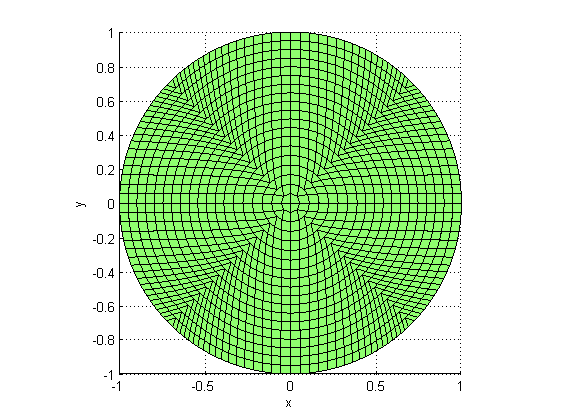
The inner disc is extracted from the Disc model by finding the elements satisfying the condition
disc = Disc; tol = 1e-3; [disc_nod, disc_el] = mesh_select(disc,... sprintf('r < %g', rB+tol), 'ind', 'all'); disc.Elements = disc.Elements(disc_el,:); figure; plot_mesh(disc);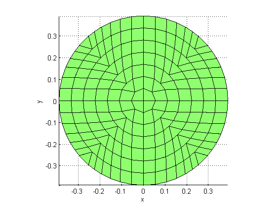
Combining the submodels
The two cylinders are created by extruding the two disc models along the 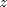 axis, and combining the segments after translation.
n = ceil(lB/Le); % number of extrusion segments for the small disc cyl = extrude_mesh(disc, [0 0 lB/n], n); N = ceil(lA/Le); % number of extrusion segments for the large disc Cyl = extrude_mesh(Disc, [0 0 lA/N], N); muffler = join_meshes(Cyl, translate_mesh(cyl, [0 0 lA]),... translate_mesh(Cyl, [0 0 lA+lB]));
Mesh postprocessing
The mesh post processing consists of merging the coincident nodes and dropping the unused nodes of the muffler model.
muffler = merge_coincident_nodes(muffler); muffler = drop_unused_nodes(muffler); figure; plot_mesh(muffler); view(3);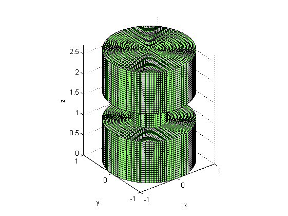